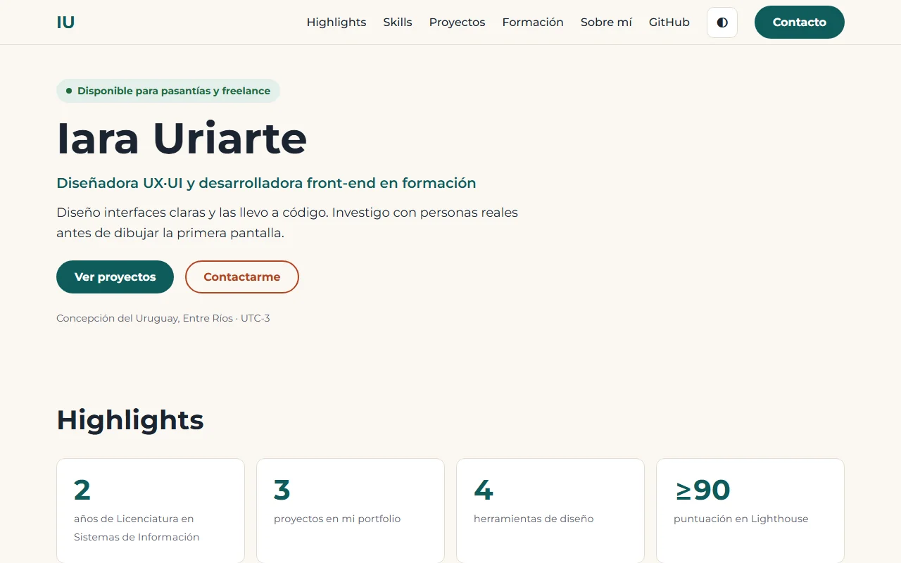
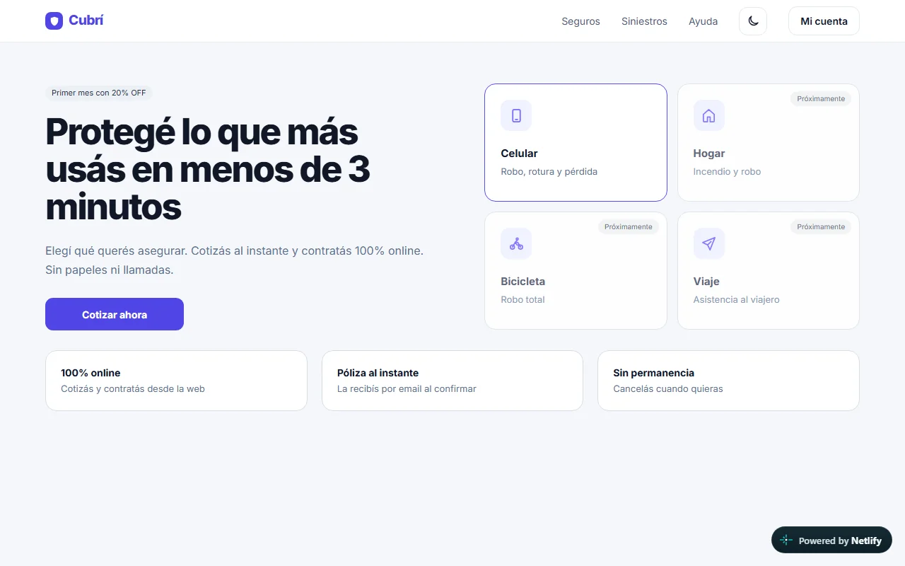
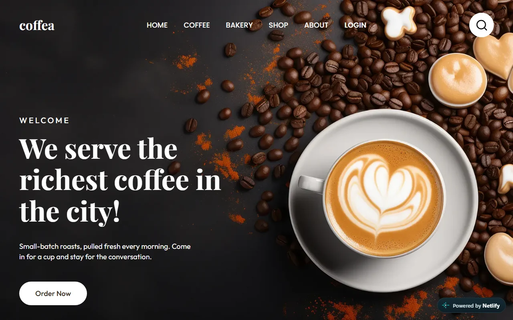

Portfolio personalNov. 2026
Sitio personal que reúne mis proyectos, formación y perfil profesional.
Resultado: proyectos, formación y contacto reunidos en un solo lugar.
- Portfolio
- Diseño web
- Front-end
Disponible para pasantías y freelance
Diseñadora UX·UI y desarrolladora front-end en formación
Diseño interfaces claras y las llevo a código. Investigo con personas reales antes de dibujar la primera pantalla.

Sitio personal que reúne mis proyectos, formación y perfil profesional.
Resultado: proyectos, formación y contacto reunidos en un solo lugar.

Sitio para conocer coberturas y comenzar la cotización de seguros de forma digital.
Resultado: mostrar las coberturas con claridad orienta mejor el recorrido hacia la cotización.

Landing page para descubrir la cafetería, su menú y su propuesta de panadería.
Resultado: organizar el menú y la información ayuda a descubrir la propuesta de la cafetería.
Investigación, arquitectura de información y validación con usuarios.
Sistemas visuales consistentes, accesibles y documentados.
Maquetación semántica, responsive y accesible.
Flujo de trabajo de diseño a producción.
2025 – actualidad · FCyT (UADER)
2026 · FCyT
Soy estudiante de Licenciatura en Sistemas de Información y disfruto crear experiencias digitales claras y fáciles de usar. Me interesa combinar diseño UX/UI y desarrollo front-end para convertir ideas en interfaces accesibles. Busco una oportunidad para seguir aprendiendo y aportar en proyectos digitales.
Busco ideas visuales y funcionales para resolver cada desafío.
Me gusta explorar nuevas herramientas y aprender cómo funcionan.
Aprendo de cada proyecto para seguir creciendo y mejorar mis ideas.
Busco seguir creciendo en diseño UX/UI y desarrollo front-end. Si querés conversar sobre un proyecto o una oportunidad, me encantaría leerte.